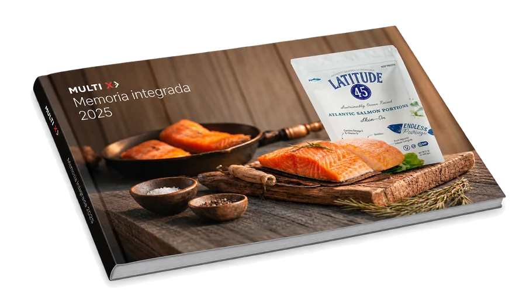

Más reciente
Memoria Integrada 2025

Resultados trimestrales, estados financieros y memorias anuales de Multi X, disponibles para descargar. [contenido por definir]

Comunicado, presentación, estados financieros y análisis razonado de cada trimestre. [contenido por definir]
Sin resultados
Prueba con otra palabra o cambia los filtros.
Más reciente
